蒸馏的常见思路是改弱模型本身：用强教师的数据训练小模型。但本文研究一个互补的前提，当小模型在任务上失败，可能不只是内部能力不足，也可能是任务呈现方式带来的认知负担过高。
于是可以走第二条路：不动目标模型参数，由强builder模型为固定的弱target模型构建一个推理时的harness（脚手架）：任务路由、提示模板、确定性求解器、验证、格式强制。目标模型不训练，builder也看不到完整测试集。
在ToM（心智理论）推理基准上，最佳harness把GPT-5.4-mini从0.49抬到0.91（+0.42），全部builder配置都正增益。增益主要来自结构外部化、确定性卸载与严格格式强制，而非更多验证数据或更长推理。
模型蒸馏的进展让部署小模型专家越来越可行。多数方法通过改变弱模型本身来迁移能力：数据蒸馏用小模型训练于强教师产生的样例/理由/示范；on-policy蒸馏让它在行动中接触密集反馈。这些方法有效，但共享一个前提，缩小强弱差距需要额外训练。
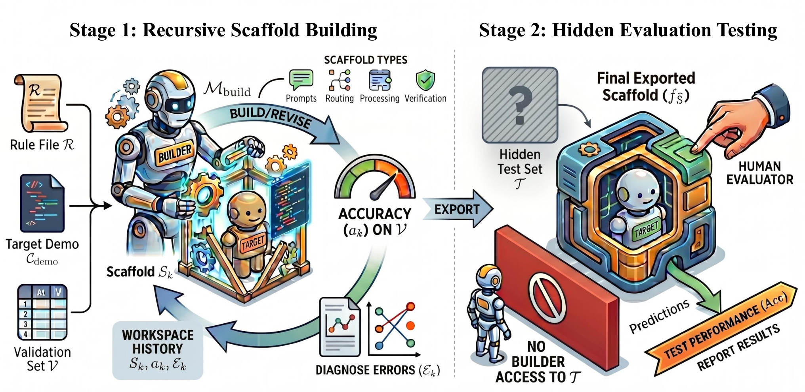
本文研究互补前提：小模型失败可能源于任务呈现方式造成的认知负担，而非纯粹能力不足。系统可以两条腿走路，让模型更强，或让任务对模型更容易。第二条路通过推理时harness实现：用路由逻辑、提示模板、验证、记忆、工具使用把模型包裹起来。
具体地：强builder模型为固定的弱target模型构建scaffold（任务路由、提示模板、确定性求解器、少样本、验证pass、格式强制的任意组合），目标模型不训练，builder看不到完整测试集。成功的scaffold必须捕捉可复用技能与任务结构，而非记忆实例级答案。
每个基准随机采样5% 做验证集，其余为隐藏测试集。builder只接触验证集构建scaffold，测试集全程保留到评估。builder放在现有agentic coding harness（Cursor / Claude Code / GPT Codex）中，可实现任意推理时流程，唯一要求是导出能作用到未见测试样例的入口。
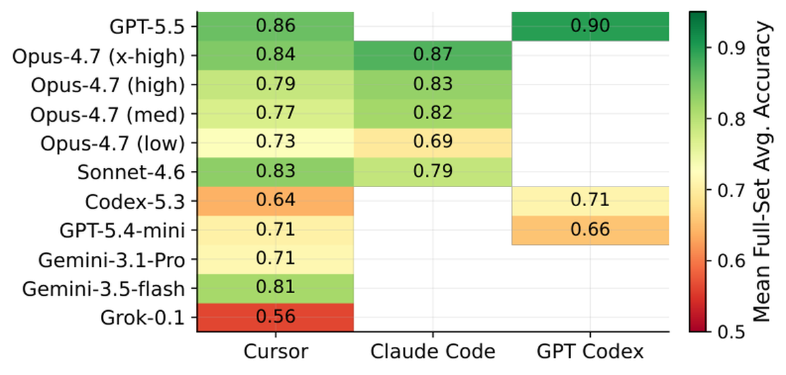
任务聚合四个ToM数据集成3900项隐藏测试集：BigToM（1200，二值信念/目标/行为）、Hi-ToM（1200，0-4阶递归信念+欺骗）、MMToM-QA（600，贝叶斯目标/信念推断）、MuMA-ToM（900，3选多智能体）。主指标是四基准全集精度的未加权宏平均。
共72个runs：平台（3）× builder模型（8种）× target（GPT-5.4-mini主 / Gemini-3.5-flash对照）× 3次重复。基线：vanilla直接调用（GPT-5.4-mini 0.488、Gemini-3.5-flash 0.761）与人工设计的UserHarness（0.939/0.941）。
所有57个GPT-5.4-mini的scaffolded runs的宏平均为0.763（+0.275），100% 超过基线。最佳单run（GPT-5.5在GPT Codex上）达0.912，相对提升87%。11个builder配置全部超基线。
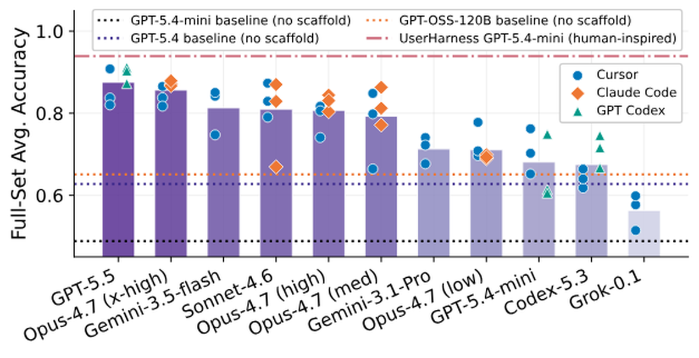
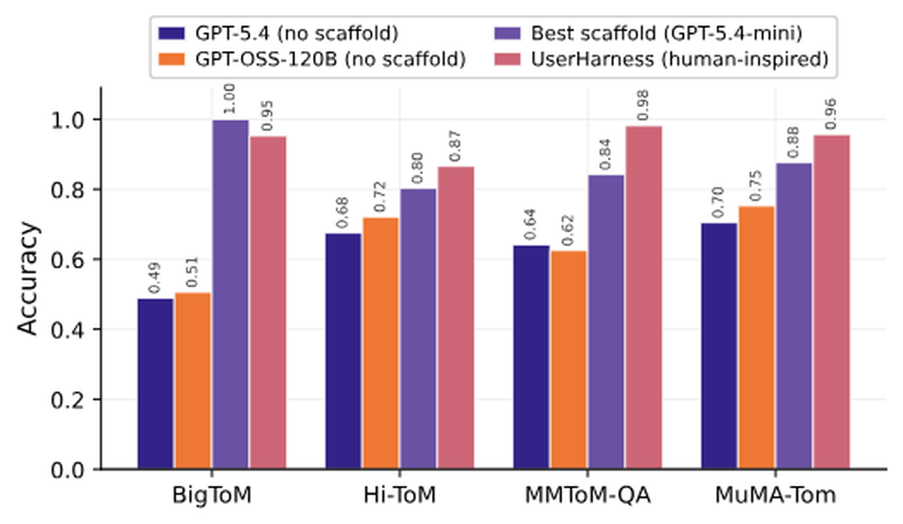
三个观察：① 每个builder×平台配置都显著超基线；② 变异主源是builder模型而非平台（builder形成清晰纵向排序，同builder的平台差较小）；③ 很多scaffolded弱模型超过无harness的更强GPT-5.4，精心设计的scaffold有时比升级到更强的裸模型还赚。
对UserHarness参考：BigToM上自动scaffold接近天花板甚至略超（1.00 vs 0.95）；Hi-ToM（0.80 vs 0.87）、MMToM（0.84 vs 0.98）、MuMA（0.88 vs 0.96）仍有缺口，集中在难以编译成确定性结构的推理上。
run间稳定性：宏平均的均值标准差仅0.036（比 +0.275主增益小一个数量级），最宽区间0.201，构建过程仍非完全确定。最大的散布出现在追求确定性求解器的设置里：基准特定规则的一个逻辑错误能移动数十分。Prompt-only的scaffold更稳但收益更小。
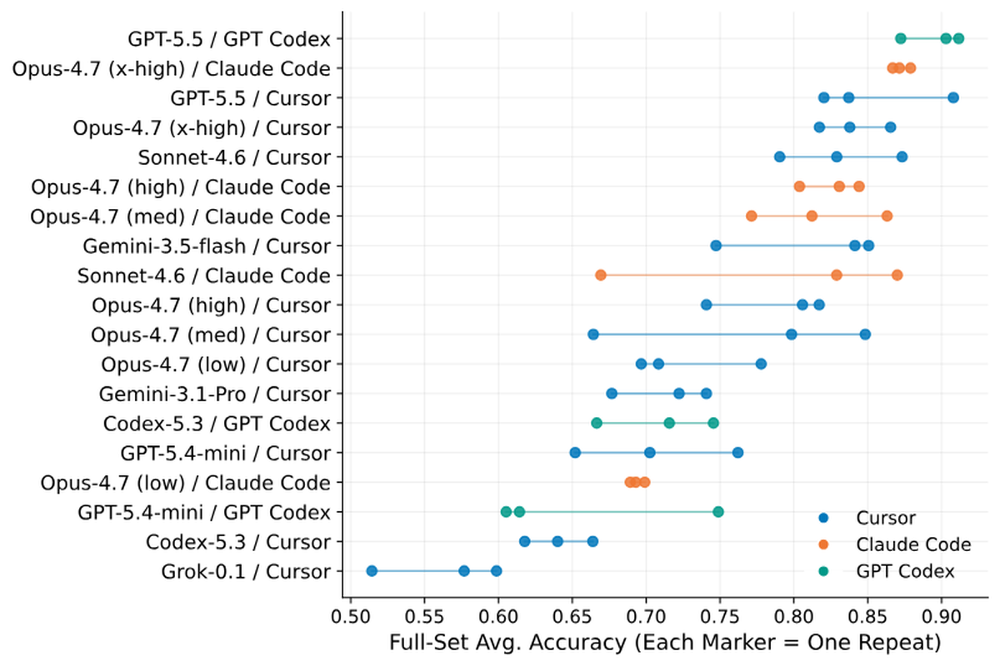
验证效率：builder平均只用4.9次验证评估（中位5，范围2-15）。最佳验证分数几乎一对一预测隐藏集性能（Pearson r=0.96，平均乐观偏差仅0.021），5% 验证切片是忠实代理。但验证迭代次数与最终精度几乎无关（r=0.17）：builder质量比探测频率重要得多。
用十二技术分类法编码所有72个runs。最普适的是格式强制（100%）与贪心解码/temp=0（98%），其次是基准路由（95%）与强制CoT（79%）。复杂策略较少：确定性求解器54%、自一致性投票仅5%、验证/仲裁仅12%。
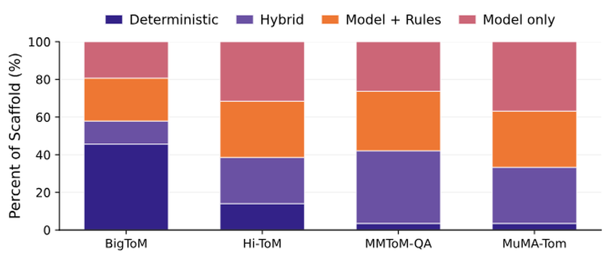
技术选择强烈依赖任务：BigToM常被确定性或混合规则解决（其问题常暴露观察/未观察区分）；MuMA-ToM几乎总是交给模型本身。这构成ToM任务的「可编译性排序」，BigToM允许大量基于规则的编译，MuMA基本仍是模型中介。
有效脚手架与其说靠奇异推理技巧，不如说靠纪律性任务工程。最普适的技术是廉价的可靠性控制：防止弱模型因畸形输出、格式混淆、采样方差丢分。真正区分强scaffold的技术（确定性求解、结构化状态提取、极性逻辑）只在基准暴露足够规律性时有用。
平台指builder写scaffold的agentic环境。匹配对比（native vs Cursor）：从Cursor到native平台宏精度仅 +0.013，8个匹配配置中native仅5/8胜（p=0.484），无系统性native优势。
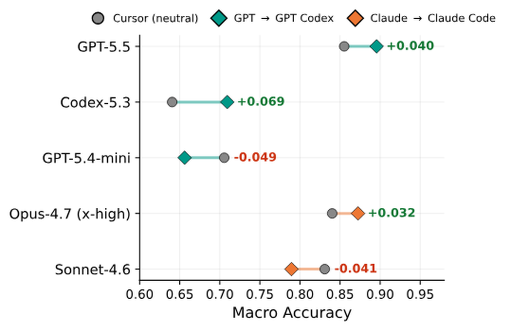
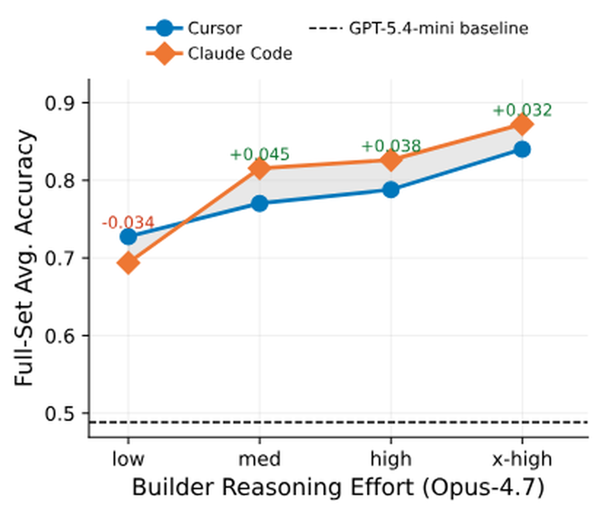
更有信息量的模式是平台×努力交互而非统一平台效应：Opus-4.7在Claude Code低努力时落后Cursor（-0.034），但一旦允许更深入思考就反超（medium +0.045、high +0.038、x-high +0.032）。native harness只有在builder有足够推理预算时才有用。
合并的平台均值主要反映roster构成：三个平台承载不同builder名单（11/5/3个），Claude Code最高边际均值0.799主要是它的Opus/Sonnet重型名单。核心信息：builder身份支配平台身份。
对比GPT-5.4-mini（基线0.488）与已较强的Gemini-3.5-flash（基线0.761）。弱target平均提升 +0.262（0.488→0.750），强target仅 +0.110，方向对全部5个builder成立。
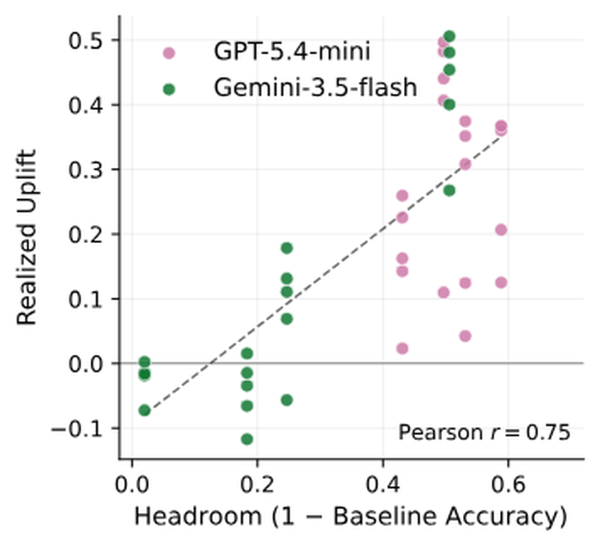
提升遵循「余量律」：实现提升被target在该基准的可用余量（1-基线）强预测（Pearson r=0.75）。scaffold主要恢复target已具备但未可靠部署的潜在能力。GPT-5.4-mini的增益分布全四基准；Gemini的增益几乎全集中在BigToM（占其宏提升96%）。
builder会自适应：给强target搭scaffold时用更少确定性机器（MuMA上model-only份额40%→73%）。但强target上scaffold可能反噬：GPT无任何基准回退，Gemini每个builder至少在1个基准回退（9/20例），尤其Hi-ToM（-0.04）与接近饱和的MuMA（-0.02），过度脚手架风险。
最强的技术关联来自把任务结构编译进scaffold的技术：极性/否定逻辑（+0.09）、结构化提取（+0.06）、混合回退（+0.04）、确定性求解。它们直接针对ToM基准的主要失败模式。
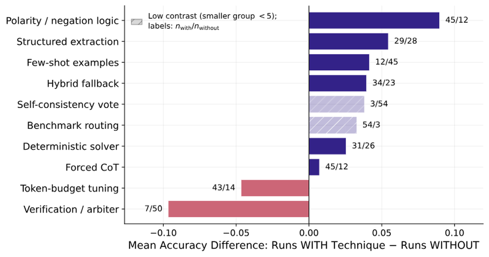
逐项验证：最佳scaffold修复1717个基线错误、只破坏105个原本正确的项（χ²≫10⁴，p<10⁻⁴），大规模从错到对，非误差重分配。
更强的builder不是提升所必需，但解锁最高增益：GPT-5.4-mini自scaffold已 +0.17~0.22，但强builder在GPT Codex上 +0.31 vs自 +0.17。不同强scaffold捕捉部分不同技能：顶部scaffold修复并集覆盖97% 基线错误，超过任何单个，不同builder发现部分不同的修复机制。
用provenance标签量化确定性分数：3900项中完全由代码或规则回答的份额。确定性卸载与scaffold质量强相关（Pearson r=0.72），builder把越多工作转成可执行结构，留给弱模型的推理负担越少。
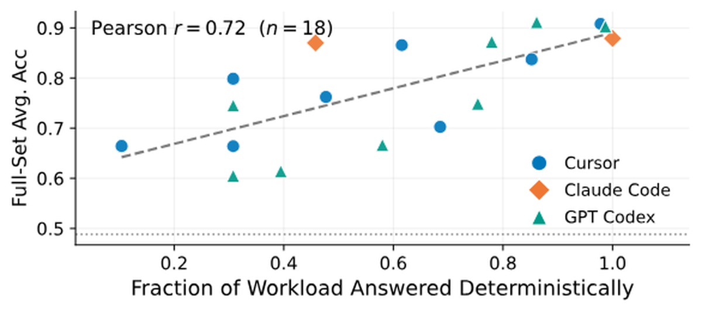
卸载可行性高度依赖任务：BigToM几乎完全可卸载（平均确定性0.94），Hi-ToM部分（≈0.51，符号信念状态跟踪），MMToM ≈0.44，MuMA最不可编译（≈0.36）。代码规模与精度仅弱相关（r≈0.22），重要的不是写更多代码，而是写移除正确认知负载的代码。
机制两层：卸载（确定性代码/规则直接作答）+ 结构化（仍需模型时把任务收窄成更受约束的prompt）。builder付一次性推理成本把部分决策过程编进harness，之后弱模型的逐项负担被降低。
最强scaffold修复83% 基线错误、只破坏7% 基线正确项，接近Pareto改进。残余错误集中在最难编译区：Hi-ToM精度随递归深度从order 0的0.999降到order 4的0.700（欺骗进一步降低），MMToM的贝叶斯目标推断子类型，MuMA的社交目标与目标信念标签。
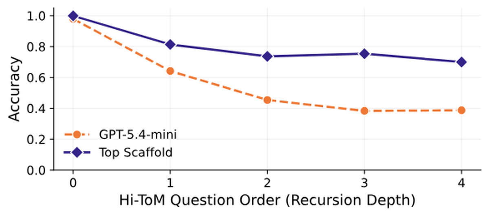
结论：脚手架产生大且可靠的增益（+0.275均值、100% runs超基线、最佳 +0.423）；程序可复现但不确定；验证高效；builder推理努力是单调杠杆（低→超高0.711→0.856，Spearman ρ=0.77）；平台是二阶因素。
对未来：强到弱脚手架既是部署策略（不换权重提升弱/便宜模型，与自动agent-harness自进化呼应），也是评估builder能力的方式，把问题从「模型能解多好」重构成「强模型能为弱模型构建多好的解题条件」。scaffold质量成为builder把推理外部化成程序、工具、反馈环与约束的能力度量。
参考：https://arxiv.org/abs/2608.12307